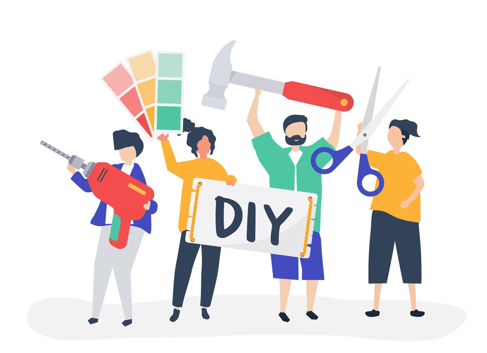

DIY

DIY-projekt är en stor del av 3D-printing, och här på 3D Zone har vi massor av idéer och inspiration för dig. Gör dina egna smycken, leksaker eller praktiska prylar med hjälp av en 3D-skrivare. Vi har även guider och tips för hur du kan anpassa och modifiera befintliga 3D-modeller för att passa dina specifika behov och önskemål.
Image by rawpixel.com on Freepik